Data Science & Machine Learning with Microsoft Fabric
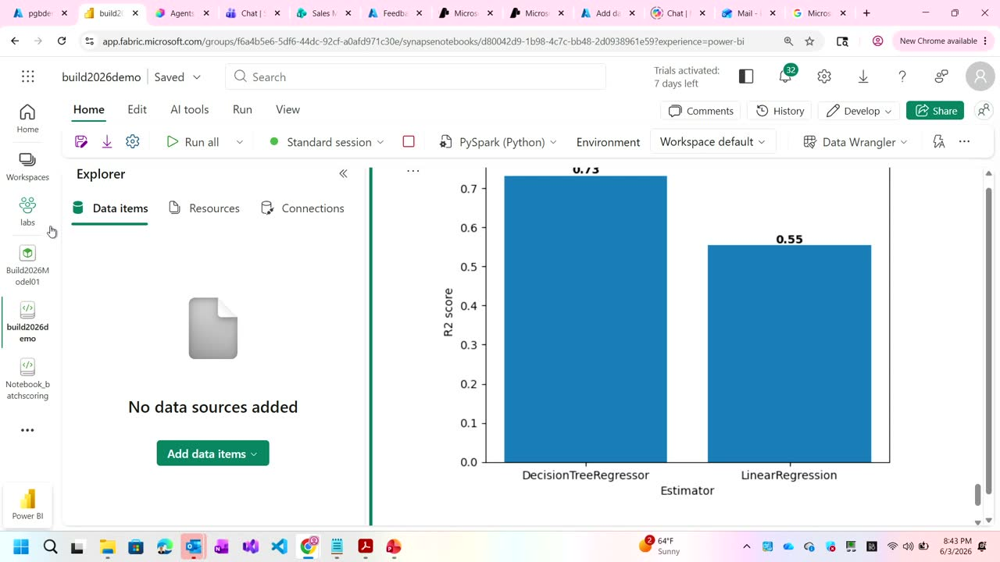
Official description
Explore Microsoft Fabric’s unified Data Science experience in this fast-paced 25-minute demo. See how to ingest and prepare data with OneLake and Lakehouse, build models using Notebooks, Spark, and SynapseML, and track experiments with MLflow. Learn how to operationalize models with batch scoring and integrate results into Power BI. The session also showcases building a simple generative AI Q&A solution using Fabric Data Agents, giving you a practical end-to-end view in a short time. Seating for this session is first-come, first-served. Add it to your schedule to plan your day and arrive early to secure a spot.
Summary
Overview
A foundational, demo-driven walkthrough of Microsoft Fabric's Data Science experience, showing an end-to-end traditional machine learning workflow from data ingestion through model deployment. The session argues that classical ML retains clear advantages over generative AI for many workloads, then demonstrates building, tracking, and operationalizing models in Fabric, closing with Fabric Data Agents for natural-language data querying.
Key announcements
- Traditional ML still has a defined role alongside generative AI [00:00:54
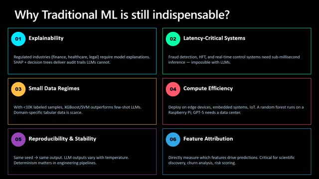
m05s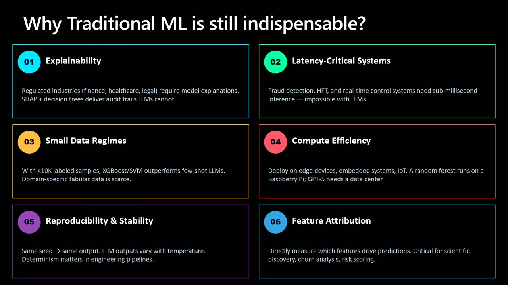
m10sp05sp10s] — Lower latency, deterministic and consistent outputs, compute efficiency, and lower cost make classical models preferable for many use cases. - End-to-end data science inside Fabric [00:03:34
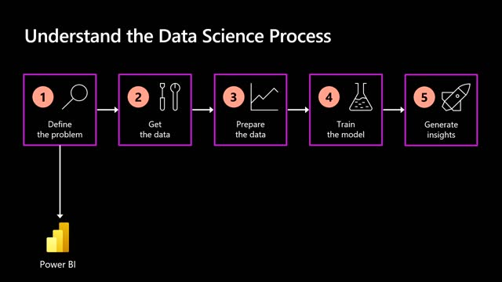
m05sm10s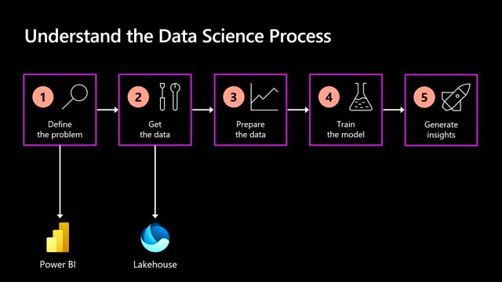
p05s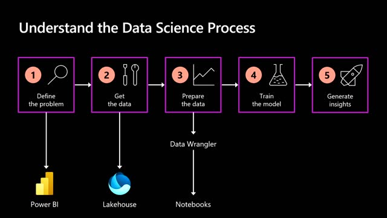
p10s] — Bring data into a Lakehouse, prepare it with Data Wrangler, run experiments in Notebooks with MLflow, deploy the model, and consume results in Power BI or custom apps. - Diabetes-projection demo using a public Microsoft dataset [00:05:00
 m05sm10s
m05sm10s p05sp10s] — A healthcare scenario ingests data from Azure Blob storage, splits it 70/30 for training and validation, and compares a linear regression against a decision tree regressor, with the decision tree scoring better [00:12:10
p05sp10s] — A healthcare scenario ingests data from Azure Blob storage, splits it 70/30 for training and validation, and compares a linear regression against a decision tree regressor, with the decision tree scoring better [00:12:10 m05s
m05s m10s
m10s p05s
p05s p10s].
p10s]. - Saving an experiment run as a deployable ML model with an endpoint [00:13:00
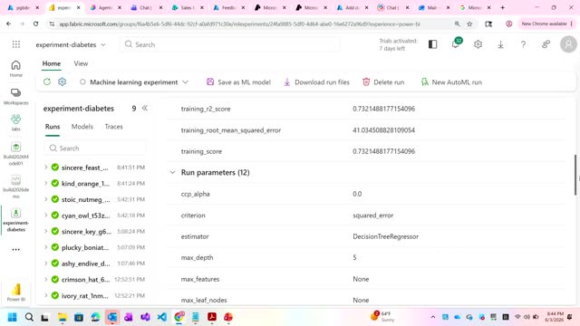
m05s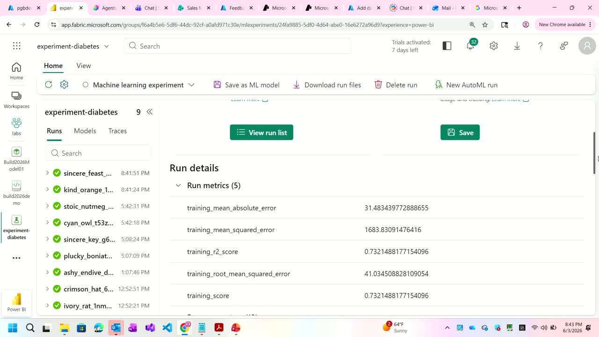
m10s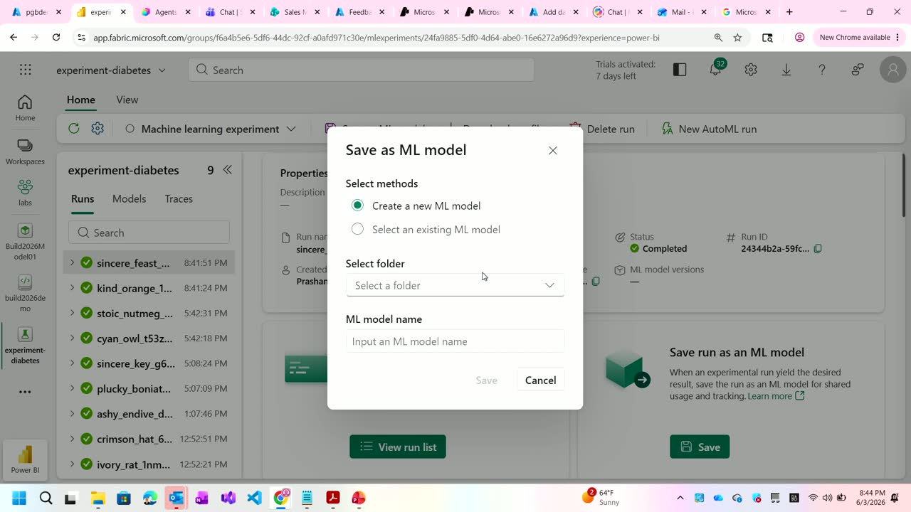
p05s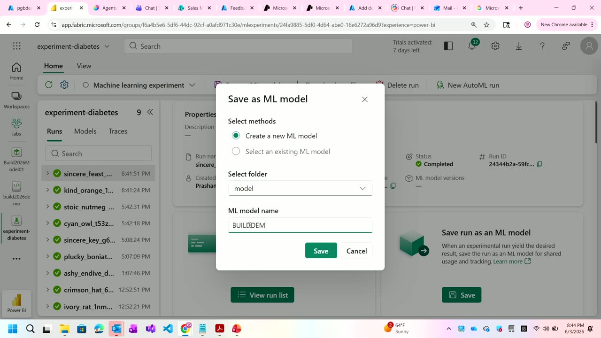
p10s] — A selected run is saved as a versioned model and exposed via an endpoint for consumption by other apps. - Fabric Data Agent for natural-language insights [00:14:49
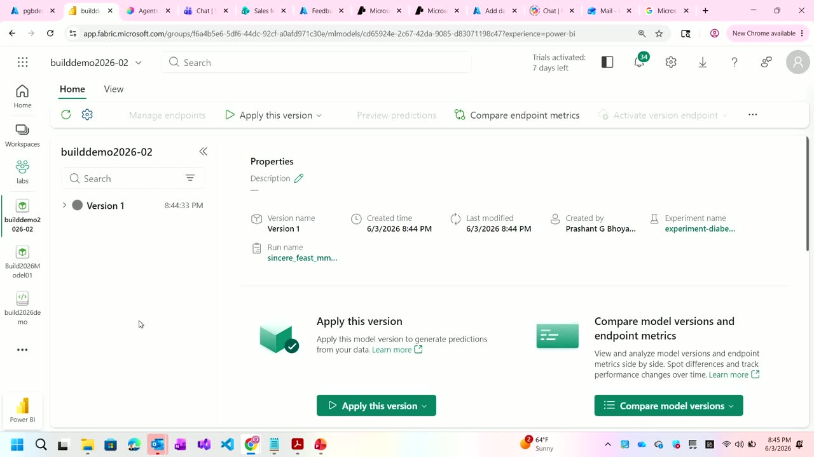
m05sm10sp05sp10s] — Any user can point a generative-AI-backed agent at OneLake data, add custom instructions, and receive insights; it is currently read-only [00:15:20 m05s
m05s m10s
m10s p05s
p05s p10s].
p10s]. - Data Agent consumable across Microsoft products [00:15:30
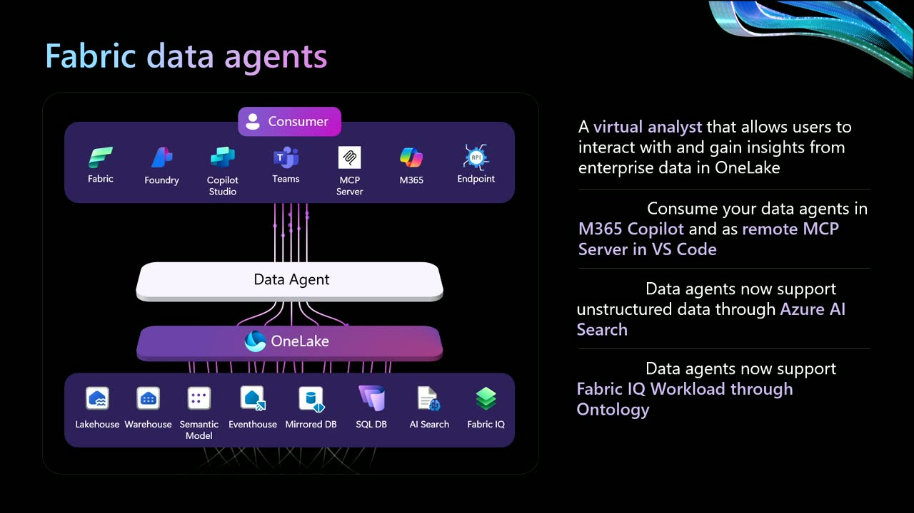
m05sm10s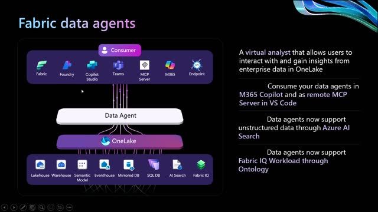
p05sp10s] — The same agent can be surfaced in Fabric, Microsoft Foundry, Copilot Studio, Microsoft 365 Copilot, and as an MCP server.
{kind=link}
{kind=link}
{kind=link}
{kind=link}
{kind=link}
{kind=link}
{kind=link}
{kind=link}
{kind=link}
{kind=link}
{kind=link}
{kind=link}
{kind=link}
{kind=link}
{kind=link}
{kind=link}
{kind=link}
{kind=link}
{kind=link}
{kind=link}
{kind=link}
{kind=link}
Topics covered
- When to choose traditional ML over generative AI (latency, determinism, cost)
- Microsoft Fabric as a unified SaaS data and AI platform, and its role-based workloads
- The data science process: define problem, gather data, prepare, train, generate insights
- Loading public data into a DataFrame, converting Spark DataFrames to pandas for scikit-learn
- Training and comparing linear regression and decision tree regressor models
- Experiment tracking and run evaluation with MLflow (metrics, mean squared error, training scores)
- Saving runs as versioned models and exposing model endpoints
- Spark runtime options in Fabric notebooks (PySpark, Spark Scala, Spark SQL, SparkR)
- Copilot assistance and VS Code editing for Fabric notebooks
- Fabric Data Agent: connecting warehouse tables, natural-language-to-SQL, and instruction tuning
- Integrating agents via Copilot Studio child/external agents and Foundry knowledge/tools
- Contrast between Fabric (single SaaS surface) and Azure Machine Learning in Foundry (multiple services)
Notable quotes
"Even though generative AI is kind of highlighting all the limelight these days... there is still a lot of use cases where you would like to use traditional machine learning model rather than using generative AI."
"One of the advantages of doing everything in Fabric is everything you are doing is in one location, everything is SaaS based. So you are not thinking about spinning up multiple services."
"As long as your data is in OneLake, you can add it to your data agent, add your custom instructions, and then it can give you insights from that data."
Products and tools mentioned
- Microsoft Fabric
- OneLake
- Lakehouse
- Data Wrangler
- Fabric Notebooks
- Apache Spark (PySpark, Spark Scala, Spark SQL, SparkR)
- MLflow
- scikit-learn
- pandas
- Power BI
- Azure Blob storage
- Fabric Data Agent
- Microsoft Foundry
- Azure Machine Learning
- Azure AI Search
- Copilot Studio
- Microsoft 365 Copilot
- Model Context Protocol (MCP) server
- Fabric IQ
- Copilot (notebook assistant)
- Visual Studio Code
Speakers featured
- Prashant G Bhoyar — presenter (Community, MVP)
Follow-up resources
- Presenter's LinkedIn profile, available via the QR code shown at the close of the session [00:23:31
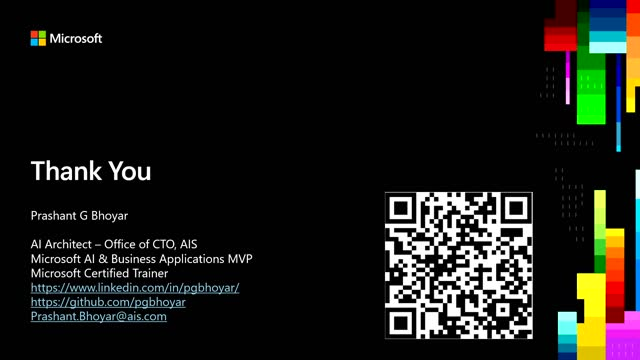
m05sm10s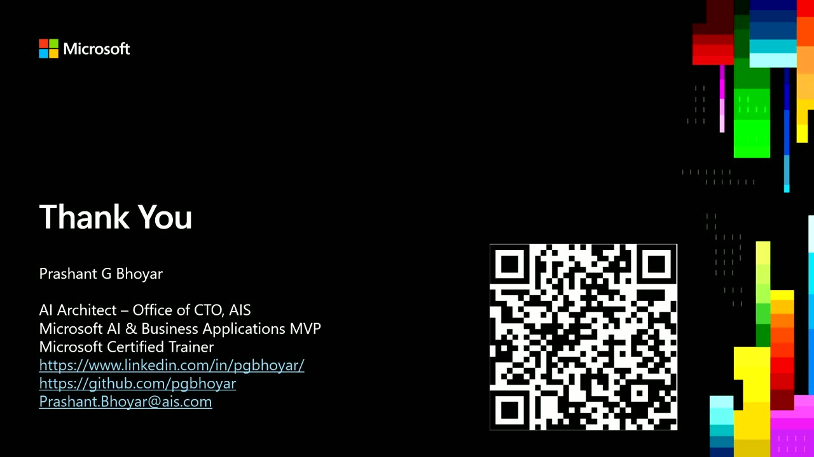
p05s].
{kind=link}
{kind=link}
{kind=link}
Frames
{kind=link}
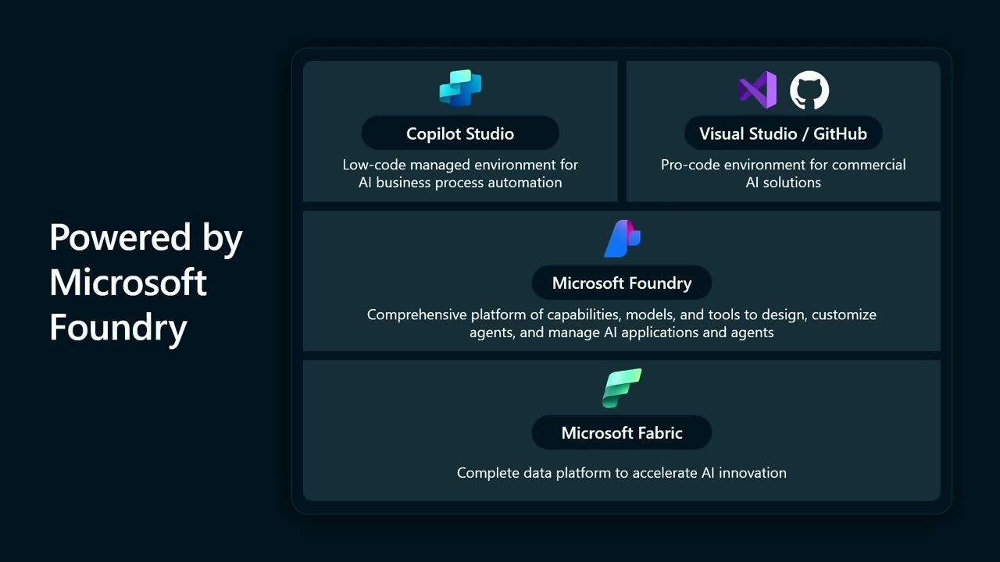
{kind=link}
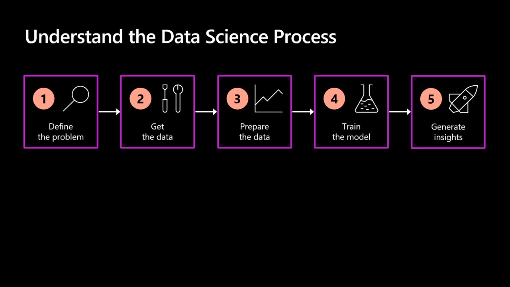
{kind=link}
{kind=link}
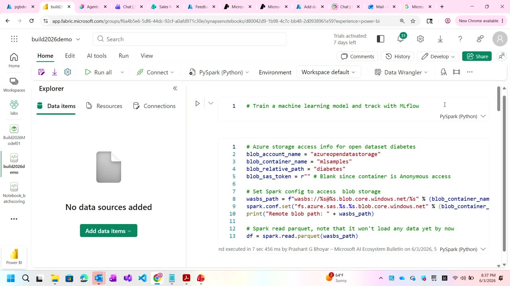
{kind=link}
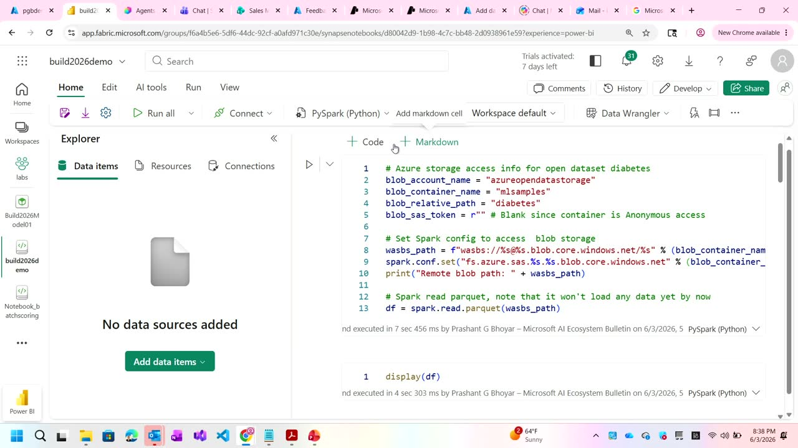
{kind=link}
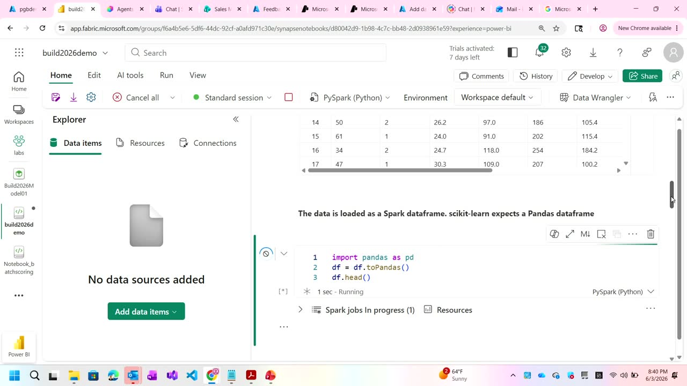
{kind=link}
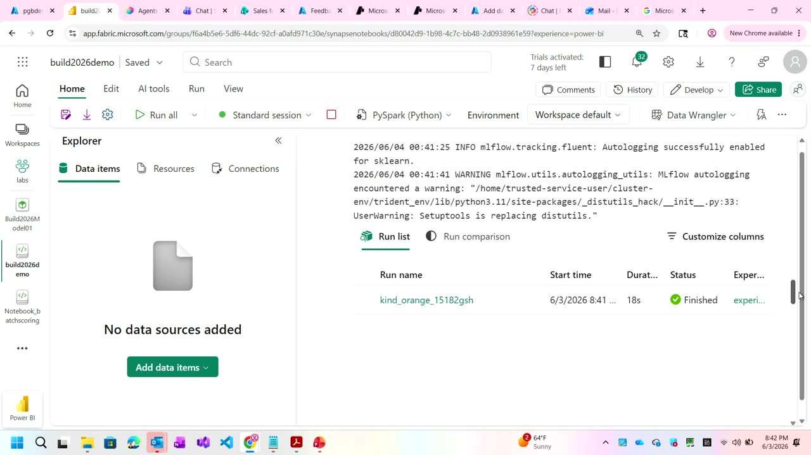
{kind=link}
{kind=link}
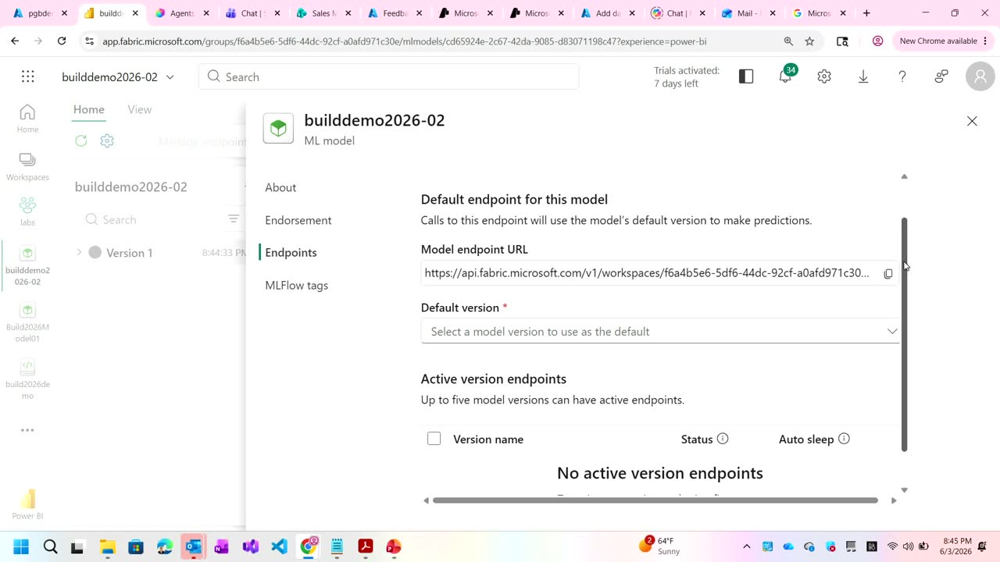
{kind=link}
{kind=link}
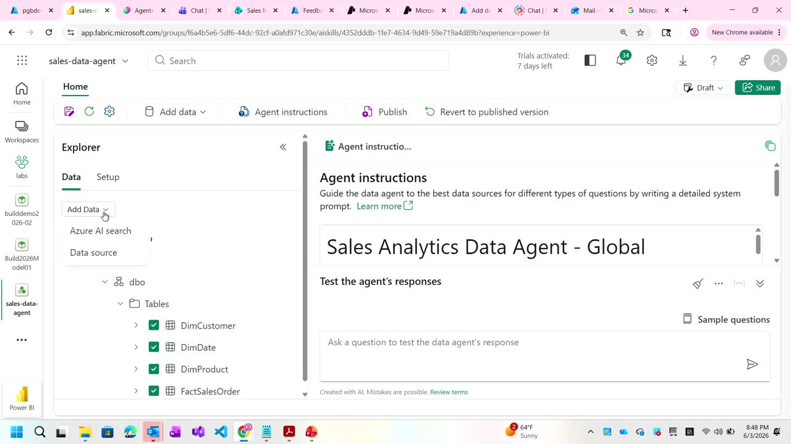
{kind=link}
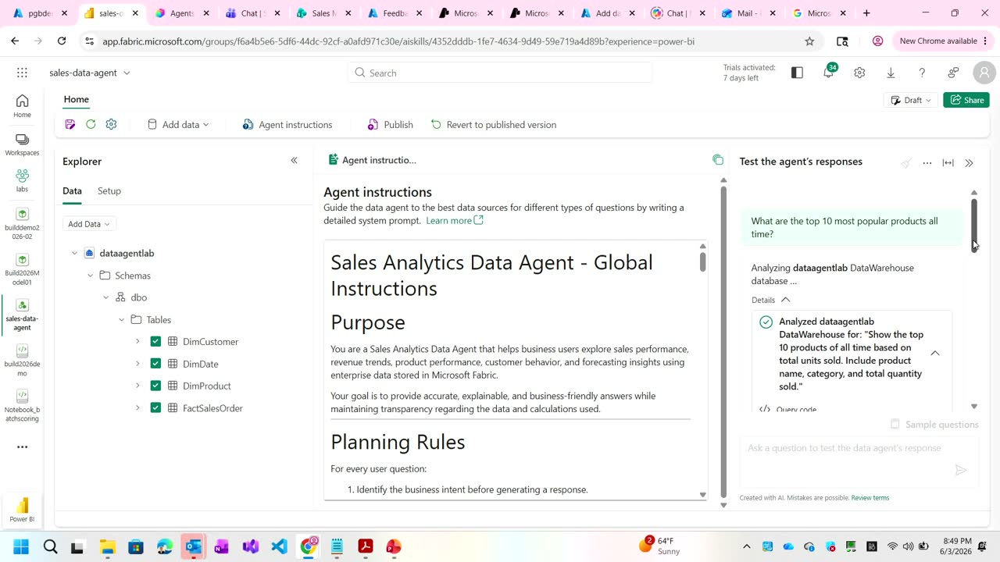
{kind=link}
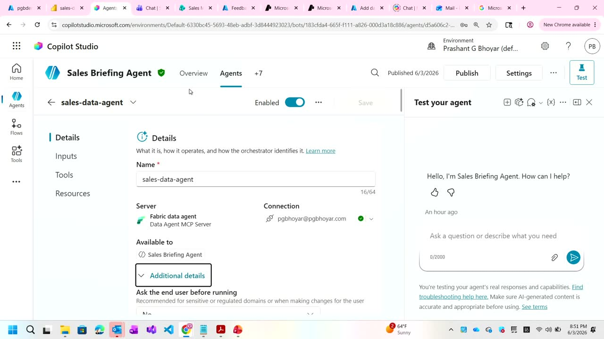
{kind=link}
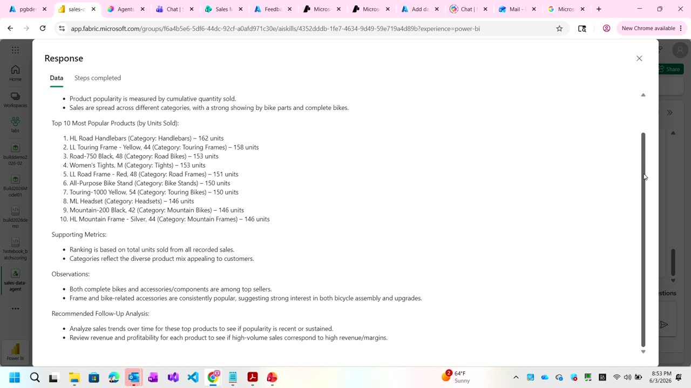
{kind=link}
Transcript
Show / hide transcript (29,055 chars)
[00:00:00] Is one of the least known or least explored part [00:00:03] of the Microsoft Fabric, which is how you can run [00:00:06] your machine learning workloads and data science workloads in fabric. [00:00:11] So this is going to be the agenda. [00:00:12] We will start with why it is still important, Why [00:00:15] machine learning is still important. [00:00:17] With all this hype around generative AI, there is still [00:00:20] role for machine learning models. [00:00:22] We are going to talk about where exactly the traditional [00:00:25] machine model, machine learning model fits. [00:00:27] We will start with the introduction of Microsoft Fabric and [00:00:30] then how we can learn machine learning models inside the [00:00:33] fabric. [00:00:34] We will have demos and towards the end I will [00:00:37] also talk about fabrics, data agent as well. [00:00:40] So even though you know generative AI is kind of [00:00:43] highlighting all the limelight these days, a lot of innovation [00:00:46] is happening. [00:00:47] There is still a lot of use cases where you [00:00:49] would like to use traditional machine learning model rather than [00:00:52] using generative AI. [00:00:54] And these are some of the reasons like you are [00:00:56] expecting a low latency, you want to make sure your [00:00:59] model is consistently giving out the exact same results. [00:01:03] You want to also have a compute efficiency, you want [00:01:06] the result fast and also at the fraction of the [00:01:09] cost for all those different workloads or different situation. [00:01:12] You want to go with the traditional machine learning models [00:01:15] rather than going with generative AI. [00:01:18] Now when it comes to running machine learning models, are [00:01:20] there a lot of services available in Microsoft stack? [00:01:23] You can run those same thing your machine learning models [00:01:26] in Microsoft Foundry. [00:01:28] You can also do that using some of the open [00:01:30] source tools. [00:01:31] But what we are going to focus today is how [00:01:33] we can do the same operations on Microsoft Fabric as [00:01:35] well. [00:01:36] So with that, let's start with what is Microsoft Fabric? [00:01:39] So Microsoft Fabric is Microsoft Unified data and AI platform [00:01:43] where we have a lot of different workloads. [00:01:46] It's a software as a service offering from Microsoft. [00:01:49] We have data factory, we have analytics, you can have [00:01:52] databases, real time intelligence, we have IQ, you can generate [00:01:56] Power BI reports and all the data that lives in [00:01:59] Fabric is part of your one leg. [00:02:03] So these are the, depending on your role, these may [00:02:06] be the different, different services that you will be using. [00:02:09] For example, if you are a data engineer, then maybe [00:02:11] you will be involved in the data factory data warehouse. [00:02:14] You may be using real time intelligence for analytics engineers. [00:02:19] Some of the core services within Fabric will be, you [00:02:22] know, Power BI and data factory. [00:02:24] Now, when it comes to the data scientist, this is [00:02:26] where you know you can use some of the data [00:02:29] science and Azure Machine learning workloads within Fabric. [00:02:34] So these are some of the commonly known machine learning [00:02:38] models that are there, like for example, classification, regression, clustering, [00:02:42] forecasting. [00:02:43] There are also a big list of, you know, models [00:02:45] that you can use. [00:02:46] You can also bring your own model as well. [00:02:50] So this is the typical process you will be following [00:02:53] when it comes to your data science process. [00:02:56] The first thing is you have to define the problem. [00:02:59] What is the problem you're trying to solve? [00:03:02] And then once you have that, the next step is [00:03:04] going to be let's get the data so that we [00:03:06] can run some machine learning models on the top of [00:03:08] it. [00:03:09] Now, just having the data is not enough. [00:03:11] You have to work and prepare the data for your [00:03:13] experiment, experimentation. [00:03:14] Then step #4 which is the most important step will [00:03:17] be training your model there. [00:03:19] And finally, once your model is available, you will be [00:03:22] generating the insight. [00:03:23] Now, in the typical case, let's say your executives are [00:03:26] going through some data, let's say using Power BI dashboards [00:03:29] and they identified a problem and they want you to [00:03:31] create a model so that you know you can, you [00:03:33] can rectify that. [00:03:34] The first thing you will be doing is you will [00:03:36] be bringing that data into your lake house. [00:03:38] And once your data is in the lake house, then [00:03:40] using Data Wrangler, you will be preparing your data for [00:03:43] the experimentation. [00:03:44] And then finally, you will be using the notebooks. [00:03:47] And inside your notebooks, then you will be running your [00:03:49] experiments, You will be using ML Flow. [00:03:51] And finally, based on the results of your experiment, you [00:03:54] will be specifying, OK, I want to deploy this particular [00:03:57] model inside the fabric. [00:03:59] Once your model is deployed, then you will be using [00:04:01] that to generate insights. [00:04:03] Again, here I'm giving the example of Power BI reports. [00:04:06] But the same model you can consume in other services [00:04:09] as well. [00:04:09] For example, you know you can consume it in your [00:04:12] custom app or in any other app where consuming models [00:04:16] is is available. [00:04:18] So now I'll be moving to a demo, demo part [00:04:21] of this. [00:04:21] But before I go there and start showing you some [00:04:24] stuff around Microsoft Fabric, let me give you the scenario [00:04:27] for, for, for this demo. [00:04:29] So we have, let's say you're working for a healthcare [00:04:33] analyst or firm and you want to do some projections [00:04:36] on diabetes. [00:04:37] There is a public data set available from Microsoft that [00:04:40] will be using using that data will be preparing the [00:04:42] data using Data Wrangler. [00:04:44] And once the data is prepared will be running series [00:04:47] of machine learning experiments on the top of it will [00:04:49] be going through the results and the result the model [00:04:52] or the type of machine learning algorithm which is going [00:04:54] to give you the best results will be use that [00:04:56] deploy that and then start and then start consuming that. [00:05:00] So just raise your hand how many of you are [00:05:02] familiar with fabric or have used fabric before? [00:05:05] OK, quite a few. [00:05:07] So with that, I am going to change the context. [00:05:08] Now I am going to start showing you around. [00:05:11] So this is I am inside the fabric and I [00:05:15] am inside my workspace called Labs, OK. [00:05:21] And I have built this notebook. [00:05:22] So in case you are totally new, just go and [00:05:25] inside your workplace click on a new item. [00:05:29] And here you will be seeing multiple options like if [00:05:32] I click on the all items, there is a big [00:05:34] list of items that you can create within your workspace [00:05:38] and you can just like filter on it. [00:05:40] So for example, I am interested in notebook. [00:05:43] All right, then provide the name, provide the location and [00:05:48] that's it. [00:05:49] And your notebook will be ready. [00:05:51] So I have already provided, created a notebook here. [00:05:53] So let me bring this up on the screen. [00:05:57] All right, so this is the notebook that we will [00:05:59] be using and I will be walking you through the [00:06:01] series of steps that we will be doing. [00:06:03] Since this is a short demo session, I will not [00:06:05] be now going through a lot detail. [00:06:07] I have just picked up a very small data set [00:06:09] and a small experiment. [00:06:11] But you can also run the similar exercise on a [00:06:13] very large data set as well. [00:06:15] So for this experiment, what we are doing is we [00:06:17] are gathering the publicly available samples from Microsoft. [00:06:21] It is currently hosted in Azure BLOB storage and the [00:06:25] first step is going to be gating that data and [00:06:29] then gating that data inside the data frame. [00:06:33] And then here we will be displaying that data. [00:06:36] But when it comes to since we are going to [00:06:40] use the psyched learn, psyched learn expect the Pandas data [00:06:46] frame. [00:06:46] So the next step we will be doing is converting [00:06:49] that data into the Pandas data frame. [00:06:51] And after that I will be splitting that data like [00:06:55] let us say I have a huge amount of data. [00:06:58] What I want to do is I am going to [00:07:00] run the experiment on 70% of that data and the [00:07:02] rest of the 30% of the data I want to [00:07:03] use for validation. [00:07:05] So that is the next step I will be doing [00:07:07] and then I will be running series of you know [00:07:10] models. [00:07:10] The first model I will be doing is the linear [00:07:13] regression model and then after that I will be doing [00:07:16] a decision T regressor and after those experiments are done [00:07:19] then I will be listing all these experiments 1 by [00:07:22] 1. [00:07:23] Then we will be receiving a specific experiment that I [00:07:26] run which name is experiment diabetes, and once that is [00:07:29] done, then I will be receiving all its previous runs. [00:07:32] So I can go evaluate each run, evaluate different parameters [00:07:36] are there and depending on which experiment give me the [00:07:39] best results, I will use that experiment and then use [00:07:42] and deploy that model. [00:07:44] So when it comes to the Fabric notebooks, when you [00:07:47] create a notebook, let me walk you through few things [00:07:50] when it comes to the execution. [00:07:51] These are the different types of Spark environments you can [00:07:54] use. [00:07:54] So I am going to use Pispark, but I can [00:07:57] also use Spark Scala, Spark SQL and Spark KRR as [00:08:01] well. [00:08:02] So let me just go you through the step by [00:08:03] step. [00:08:04] The first thing I am going to do is I [00:08:07] am just going to load the data through the public [00:08:11] data set available from Microsoft and everything I am doing [00:08:16] right now I am doing inside the fabric inside the [00:08:20] browser. [00:08:21] But you can also do the similar thing. [00:08:23] For example, if you don't use the web version of [00:08:26] this notebook, you can also open this notebook inside the [00:08:30] VS Code and use that as well. [00:08:32] There is also copilot available in case you are new [00:08:34] to Python or you are struggling with, you know, getting [00:08:37] the correct syntax. [00:08:38] You can directly fire up copilot over here to get [00:08:41] get the help on that. [00:08:45] All right, looks like it's running OK. [00:08:51] The job was successful. [00:08:52] And in case you're interested, you can expand this and [00:08:55] find more information about the run, like how much time [00:08:58] it take and you can also go through the details [00:09:01] log as well. [00:09:02] The next thing I want to do is I'm just [00:09:04] going to deflate display the data frame for all the [00:09:06] data that we loaded. [00:09:11] All right, the data is there. [00:09:13] The next thing I want to do is I'm going [00:09:15] to convert these data frames into the pandas. [00:09:24] All right, OK. [00:09:34] It is finished. [00:09:43] Once this is done, then I will be splitting this [00:09:45] data into 70% for training and 30% for the test. [00:09:58] All right, let me go ahead and do that now. [00:10:05] OK, so this one is also done. [00:10:07] The next thing is now or which the most important [00:10:10] step now I will be training a linear regression model. [00:10:12] OK, so let me go ahead and fire that up. [00:10:18] Since my data size is small, all these operations are [00:10:20] going really, really quickly. [00:10:35] All right, this one is done as well. [00:10:38] The next thing I am going to do is I [00:10:39] am going to do like train a decision tree regressor. [00:10:48] Perfect. [00:10:49] That is done as well. [00:10:51] Then I will be listing all the experiments that I [00:10:53] have connected, I have conducted and one thing you will [00:10:56] notice the name of the experiment that we have is [00:10:59] this one experiment- diabetes. [00:11:01] So I am just going to list all the experiments [00:11:04] I have done in this particular workspace. [00:11:15] And then I am interested in one specific experiment that [00:11:19] we have used which is experiment- diabetes. [00:11:21] Let me go ahead and retrieve the information about that. [00:11:26] And the next thing I am going to do is [00:11:27] I am going to retrieve all the runs for that [00:11:29] experiment. [00:11:30] All the different kind of runs I have done is [00:11:32] in the different models. [00:11:33] I will be doing that. [00:11:36] So these were the different instances of the run I [00:11:39] had. [00:11:39] I had the run ID whether it was finished or [00:11:42] not and artifact URL as well. [00:11:48] OK. [00:11:49] But I am just interested in getting the last two [00:11:51] runs and see see what was the result for that. [00:11:58] All right. [00:11:58] And finally, what I'm going to do is I just [00:12:01] want to do a quick visualization regarding the model comparison. [00:12:10] OK, so next thing I'm going to do is So [00:12:12] what I see is the scores, I'm getting better scores [00:12:16] with the decision tree regressor as compared to the linear [00:12:19] regression. [00:12:21] So correspondingly you can run multiple iteration of experiment and [00:12:24] then you decide which particular model or experiment you want [00:12:28] to go with. [00:12:28] So I am going to go back to my workspace [00:12:31] now and go to this particular experiment which is diabetes [00:12:36] experiment diabetes. [00:12:40] Here I will see all the different runs I have [00:12:43] and then I can see the individual information about that [00:12:48] run like different matrix, different training score, again mean square [00:12:53] error. [00:12:54] And based on my criteria, then I can decide which [00:12:57] particular run that I am most liking it. [00:13:00] And then I can just select that and then save [00:13:02] as a model. [00:13:03] OK, For example, I'm going to create a new model [00:13:09] from this experiment and let's call it as build table [00:13:16] 2602 and then save it. [00:13:21] OK, I'm saving this model inside my fabric workspace. [00:13:24] Once this model is saved, I can click on view [00:13:27] the view ML model. [00:13:29] So my model is now ready. [00:13:31] I can also apply the version as well but let [00:13:34] me quickly show you its settings of it. [00:13:37] So here I can go and change the name of [00:13:39] the model or update the name of the model. [00:13:41] I can add a description, but its one thing to [00:13:44] run your experiment and then create a model. [00:13:46] But the most important part is how you will consume [00:13:49] that model now. [00:13:50] So that's so there you can click on the endpoints [00:13:52] and here you will see the information about how I [00:13:55] can start consuming this model. [00:13:57] You know in other apps so that that app can [00:14:00] make the the past the relevant content and and run [00:14:04] run this model for me and get the relevant output. [00:14:13] All right. [00:14:14] Same thing you can do on Foundry side as well. [00:14:17] In Foundry we have a service called Azure Machine learning. [00:14:20] But one of the advantage of doing everything in fabric [00:14:23] is everything you are doing is you know in one [00:14:26] location everything is SAS based. [00:14:28] So you are not thinking about spinning up multiple services [00:14:31] when it comes to Azure Machine Learning, since it is [00:14:33] part of Azure, you have to take into account multiple [00:14:36] services that you will be creating, how exactly your pipeline [00:14:39] will running, where exactly your app will be hosted, how [00:14:42] you will, you know, bring the data for experimentation. [00:14:45] All these things become very, very easy when it comes [00:14:48] to the fabric. [00:14:49] Now we are going to switch the context and talk [00:14:52] about something called data agents. [00:14:54] So data, I know fabric workloads, sorry machine learning workloads [00:14:57] in fabric or notebooks are mostly for data scientists and [00:15:00] machine learning engineers. [00:15:02] But when it comes to the fabric data agent, anyone [00:15:05] can use Fabric data agent and fabric data agent you [00:15:08] generative AI behind the scene and as long as your [00:15:11] data is in one lake, you can add it to [00:15:14] your data agent, add your custom instructions and then it [00:15:17] can give you insights from that data. [00:15:20] Right now one of the main limitations of fabric data [00:15:23] agent is its a read only. [00:15:25] I can only get the insights from the data. [00:15:27] I cannot really write back to the data. [00:15:30] And once your agent is ready, you can consume that [00:15:33] agent into multiple services. [00:15:35] I can consume that directly into Fabric. [00:15:37] I can also consume on the Foundry side. [00:15:39] I can integrate that with copilot studio and the same [00:15:42] agent is also available as MCP server. [00:15:45] And I can also directly deploy that agent into the [00:15:48] M-65 copilot as well. [00:15:49] So I am going back to the demo section now. [00:15:52] So I am going to go back to the workspace [00:15:55] and we will go back to this particular data agent. [00:15:59] So the scenario here is I have a lot of [00:16:01] self information and that information is available in the form [00:16:05] of SQL table. [00:16:07] And someone from the upper management would like to get [00:16:10] some insights from that data in the SQL table. [00:16:13] And without data agent, the current workflow is whatever starts [00:16:16] the upper management would like to generate, they send that [00:16:19] to the data engineering team, Data engineering team run a [00:16:22] lot of SQL queries, summarize that information from the queries [00:16:26] and send back, send that back to them. [00:16:28] So how we can simplify this? [00:16:30] So first thing first, in the fabric data agent again, [00:16:36] you can just go to the workspace, click on the [00:16:41] new item and here go to all items and then [00:16:46] search for agent. [00:16:48] And then here you'll see two options, Data agent and [00:16:51] operation agent. [00:16:52] So I'll be selecting with data agent here and here. [00:16:55] You just have to start with just giving the name. [00:16:56] OK, so for example, I have already created agent, so [00:16:59] I'm just going to go with that, which is the [00:17:01] sales agent. [00:17:02] Once you give it a name, the next thing you [00:17:04] have to do is you have to add the data [00:17:06] and your data can be coming from your Azure AI [00:17:08] search, which is one of the service available with Microsoft [00:17:11] Foundry. [00:17:12] Or you can also click on the data sources and [00:17:14] any data that is available within your lake house or [00:17:17] warehouse, you can use that which is this agent. [00:17:20] So this particular warehouse I have already added and this [00:17:23] warehouse has four tables right now. [00:17:25] The customers date, the product and sales order. [00:17:29] The next thing is then you have to provide the [00:17:31] instructions and the instructions you can provide in the form [00:17:34] of natural language. [00:17:35] So let me minimize this a bit so we can [00:17:38] see and these are very, very detailed instructions. [00:17:41] But you can also small start with a small instruction [00:17:44] and over the time you can you can expand on [00:17:46] it. [00:17:46] And also there is a limitation on the characters like [00:17:49] number of characters like how long of instructions you can [00:17:52] ask. [00:17:52] But once you do the setup, the next thing you [00:17:55] will be doing is you will be testing out your [00:17:57] data agent. [00:17:58] So this is the test pane that you have. [00:18:01] And here I am just going to ask one of [00:18:03] the standard query that I have is what are some [00:18:06] of the top 10 most popular products of all time. [00:18:09] So let me fire that up and I will show [00:18:11] you how exactly things work behind the scene. [00:18:13] So I am asking a question in the natural language. [00:18:15] The answer for this question is available in various tables [00:18:19] in my lake house. [00:18:20] However, what the fabric data agent is going to be [00:18:23] doing is converting my query which is in natural language [00:18:26] into the series of SQL statements. [00:18:29] Those statements get executed against those table and the SQL [00:18:32] statement will give me the data in the form of [00:18:35] the records and then behind the scene, it's going to [00:18:38] transfer that records into the format that I am asking. [00:18:43] And this is where you can see like how things [00:18:45] are working behind the scenes. [00:18:46] So it fired up the SQL queries and this is [00:18:49] the output that we got. [00:18:50] And finally, the agent is going and summarizing that information [00:18:54] based on the user's query and also based on some [00:18:57] of the instructions that I have provided. [00:19:09] All right, while we are waiting for the answers, let [00:19:12] me quickly show you the settings part. [00:19:14] So once I publish the agent, this is where once [00:19:18] the agent is published, I can then expose that that [00:19:21] agent is also available as an MCP server as well, [00:19:25] so that if I had to consume this agent outside [00:19:28] of Fabric, I can do that easily. [00:19:39] OK, I am just going to start it one more [00:19:42] time and refresh it and once that answer is showed, [00:19:46] I will show you then how you can integrate this [00:19:49] fabric data agent with other products as well. [00:19:54] OK, stop. [00:19:57] OK, perfect. [00:19:58] Let me fire this up and we will come back [00:20:01] to it. [00:20:02] But let me show you how I can expose this [00:20:04] agent into the other services. [00:20:06] Because more or more often they are not. [00:20:09] You will not be just creating one agent, you will [00:20:11] be creating multiple agents. [00:20:13] So let us say I created this agent in fabric. [00:20:15] I can explore the same agent inside copilot studio. [00:20:19] So inside copilot Studio. [00:20:20] copilot studio is one of the product available in Microsoft [00:20:23] ecosystem to create agents. [00:20:25] It is again follow the same principle as fabric agent [00:20:28] which is available as the SAS product. [00:20:31] Most of the stuff is drag and drop and when [00:20:33] it comes to adding the agents to existing agent in [00:20:36] copilot studio, you can either create a new child agent [00:20:39] or you can go to connect to an external agent. [00:20:42] And this is where you can see multiple options. [00:20:44] I can now connect a copilot studio agent to fabric [00:20:47] agent as well. [00:20:49] So if I do that, I had to provide the [00:20:50] connection information. [00:20:52] Once I do, then all the agents, the fabric data [00:20:55] agent, this particular account has access to that information will [00:21:00] come up and then I can just select and ah, [00:21:03] add that agent. [00:21:04] And while adding that agent, I can also provide some [00:21:06] additional description. [00:21:07] So the Copilot Studio agent knows what exactly the purpose [00:21:10] or function of this agent is. [00:21:15] Let me go back here. [00:21:18] OK, looks like the demo gods are not working with [00:21:20] us. [00:21:21] The next thing is when it comes to publishing this [00:21:25] agent, I can directly publish this agent to the M-65 [00:21:29] copilot as well. [00:21:31] So if you as a user has M-65 copilot license [00:21:33] and your tenant admin has made this agent available within [00:21:36] the Microsoft 65 copilot chart, I can add mention this [00:21:39] agent and start interacting with that. [00:21:43] OK, looks like the responses came back. [00:21:45] And if I do the expand response, this is where [00:21:48] the data will be looked like, like for the final [00:21:51] output. [00:21:52] But if you click on the steps completed and if [00:21:54] you expand that, this will show you the series of [00:21:57] steps the data agent has taken behind the scene to [00:22:00] give you the response back. [00:22:04] You OK? [00:22:14] All right, Let's say you are using Microsoft Foundry to [00:22:18] create agent. [00:22:20] You can expose this data agent in a two way. [00:22:22] You can either call that data agent from an agent [00:22:25] or you can also use that as a knowledge as [00:22:28] well. [00:22:29] So if I go and create a knowledge base, I [00:22:32] can also point it to the fabric IQ. [00:22:35] That is one way of doing it. [00:22:37] If I go onclick on the agents here and let's [00:22:41] say I use this particular agent, if we go back, [00:22:46] I think this is not the one and I can [00:22:50] go to the tools and I can add the fabric [00:22:54] data agent as well. [00:22:56] So for example, if I go here and add this [00:23:00] data agent and click on Browse tools, I can also [00:23:04] add this fabric data agent there as well. [00:23:09] So this is the way you know you can, you [00:23:11] can expose the same fabric data agent on multiple products [00:23:14] as well within Microsoft. [00:23:16] With that, we come to an end. [00:23:19] If you have follow up questions, please let me know. [00:23:22] I am available here. [00:23:23] Since this is the last session of the day, I [00:23:25] can stay longer here to address your question, but you [00:23:28] can also send your questions via e-mail or this QR [00:23:31] code will point to my LinkedIn profile as well. [00:23:33] With that, thanks for joining. [00:23:34] I have a wonderful rest of the evening and safe [00:23:37] travels.